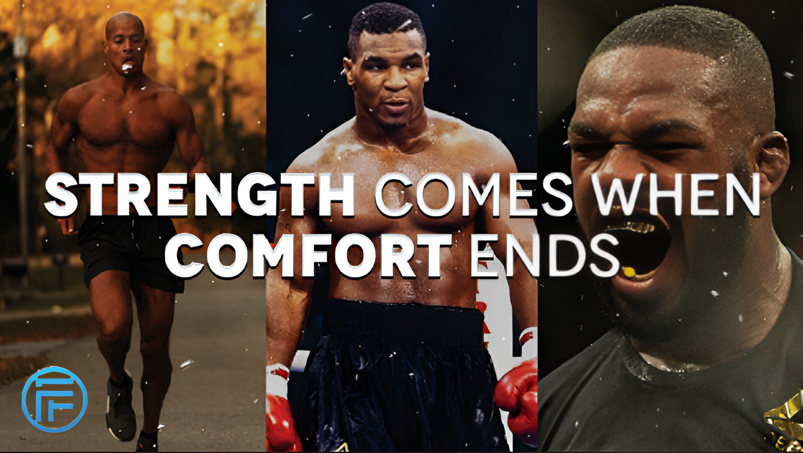
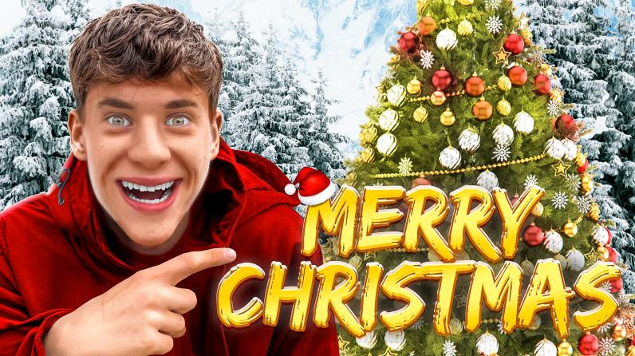
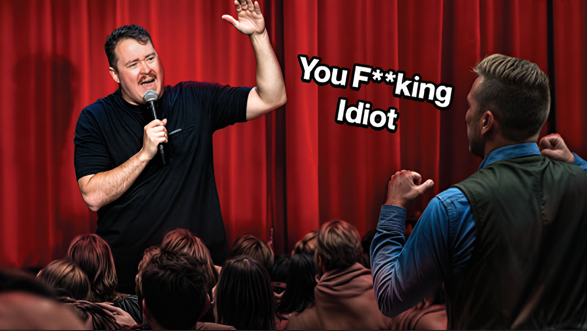
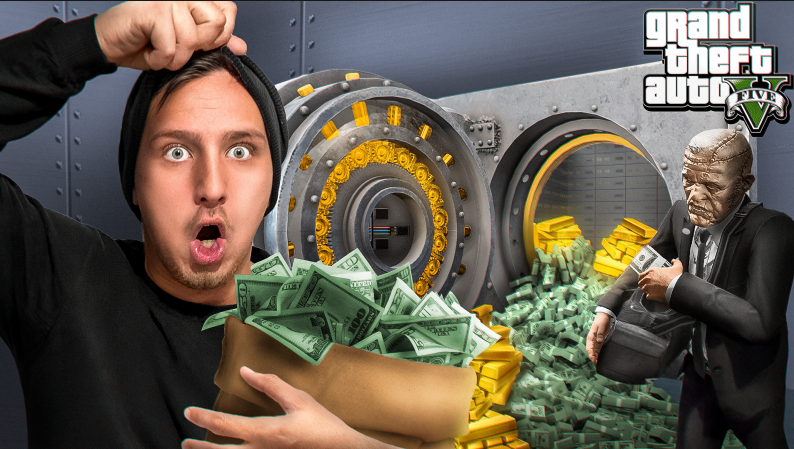

DesignDizajn
YouTube ThumnbailsYouTube Thumbnailovi
A collection of YouTube thumbnail designs created to capture attention and communicate the essence of each video at a glance. Each thumbnail combines bold imagery, striking composition, and expressive typography to create a distinctive visual identity and stand out in a crowded feed. Kolekcija dizajna YouTube thumbnailova kreiranih da privuku pažnju i prenesu suštinu svakog videa na prvi pogled. Svaki thumbnail kombinuje upečatljive vizuale, promišljenu kompoziciju i izražajnu tipografiju kako bi stvorio prepoznatljiv vizuelni identitet i istakao se među ostalim sadržajem.



